Movie has been a daily activity of our life，which means movie actually has been one of the most profitable career. we talk movies, we watch movies, we chase the movie stars, and we can get so many topics in this industry, but what movies bring to you? and lastf friday night we had a discussion about it.

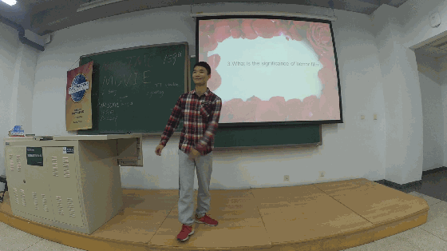
The horror films are the best choice when you are selecting one movie with your lover, isn't it?
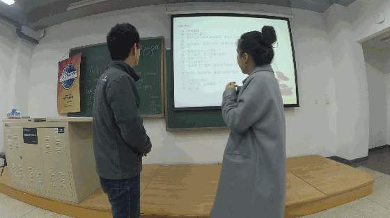
A classic movie play repeatted on the stage, even they met some troubles but amy and milton still did a good job and finished it well.
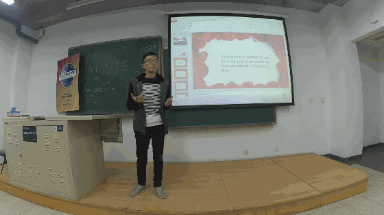
John is always so calm to deal with every question, obviously including this one.
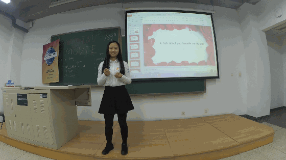
Kiki brought us a responsible , beautiful and encouraging speech, and we all know that nothing is better than the thing that our kiki appear on the stage of toastmaster, this is the best speech kiki deliver to us~~
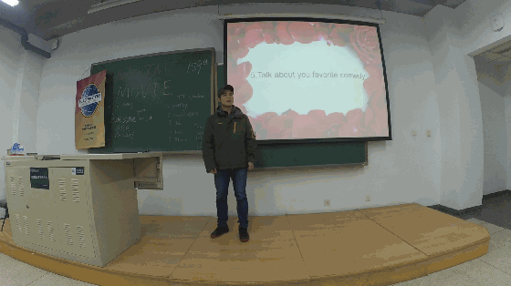
Flair is more and more familiar with this stage and his speech is fluent and clear , and i think he should prepare for his first CC1 as qiuck as often.
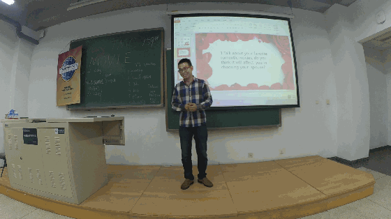
Antonio seemed a little nervous but his speech still caught our attention well, anyway table topic speech is not that easy as you think, and we believe next time he will get the best probably.
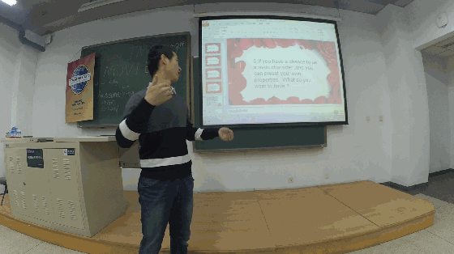
Confident boy Xixiong from THU delievered a wonderful speech, of course the confident speech made him get the best of that night, congratulations.
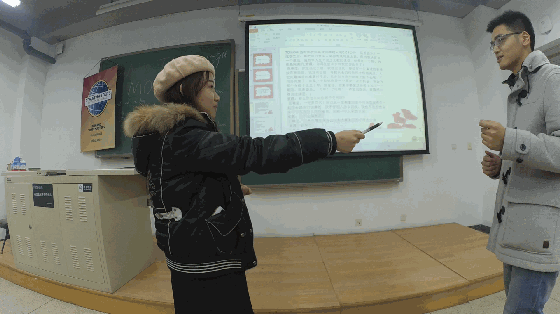
The lovebirds played one of the most famous part of the film "大话西游", and this shot is caught when boy said ".......10000 years..",and girl was too moved to fell the sword. very impressive performance~

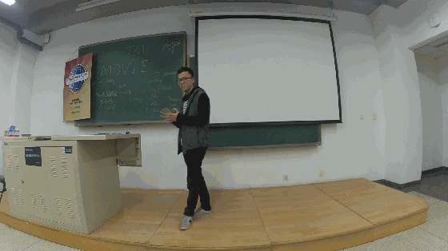
Don't be trapped and don't be afraid ,keep up and move on, life is always like this~
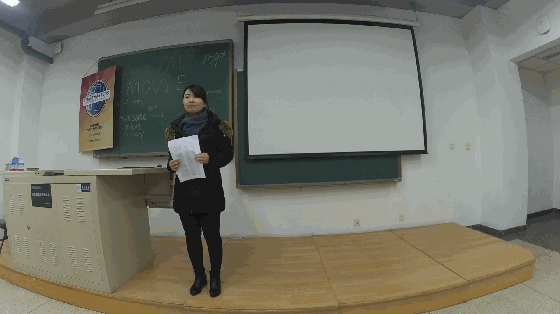
Attitude matters most than anything, Sarah shared us her private experience, and taught us that the most important thing in your work or study.


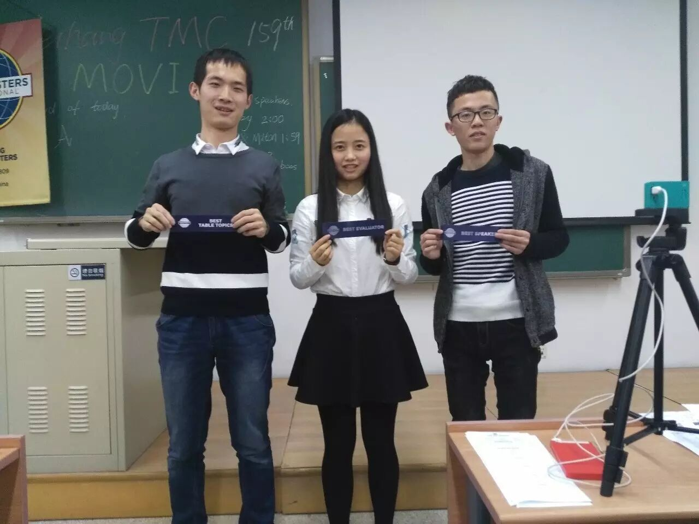
Best evaluator to Kiki, for her great professional evaluation
Best speaker to John, for his wonderful speech
Best table topic speaker to Xixiong, for his wonderful table topic speech
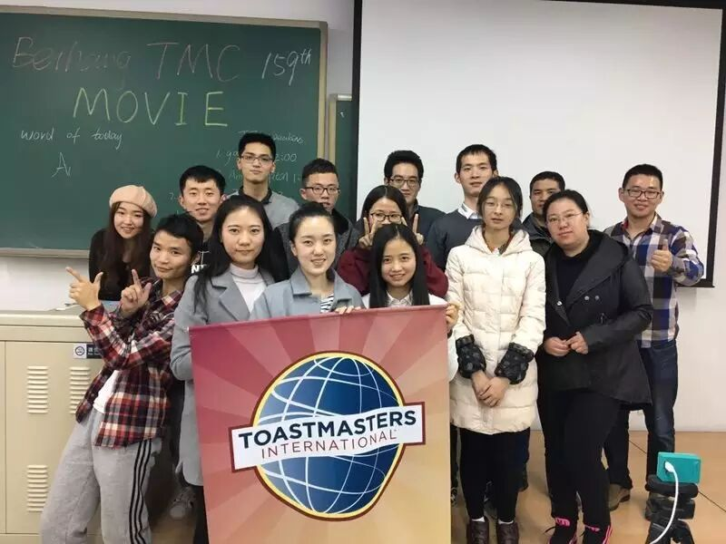
the final group picture
Beihang toastmaster welcome everyone who loves comunication
byspeaking English as well as chinese
if you want your voice be heard in public without no fear
come to our stage and show you
meet you at every Friday night 7:30pm
position: please wait notification before each meeting.....
TT-antonio 链接：http://pan.baidu.com/s/1jIe7h7w 密码：444k
TT-kiki 链接：http://pan.baidu.com/s/1ctG7Gq 密码：2my7
TT-Flair 链接：http://pan.baidu.com/s/1i5oc9Sx 密码：csgk
TT-Xixiong 链接：http://pan.baidu.com/s/1o7OPUaQ 密码：hrcr
TT-amy && milton 链接：http://pan.baidu.com/s/1eSdZqKy 密码：h7lk
TT-John 链接：http://pan.baidu.com/s/1geTNR8n 密码：8cwp
TT-the CP 链接：http://pan.baidu.com/s/1hs0VOVE 密码：o7uk
CC-John 链接：http://pan.baidu.com/s/1o8k4BZs 密码：5qvg
CC-Sarah 链接：http://pan.baidu.com/s/1slUzFD7 密码：rjyw
https://mp.weixin.qq.com/s/shCAPy_ckXAHNveYL6QJNg
本页为抢救式本地归档，图文已永久保存。